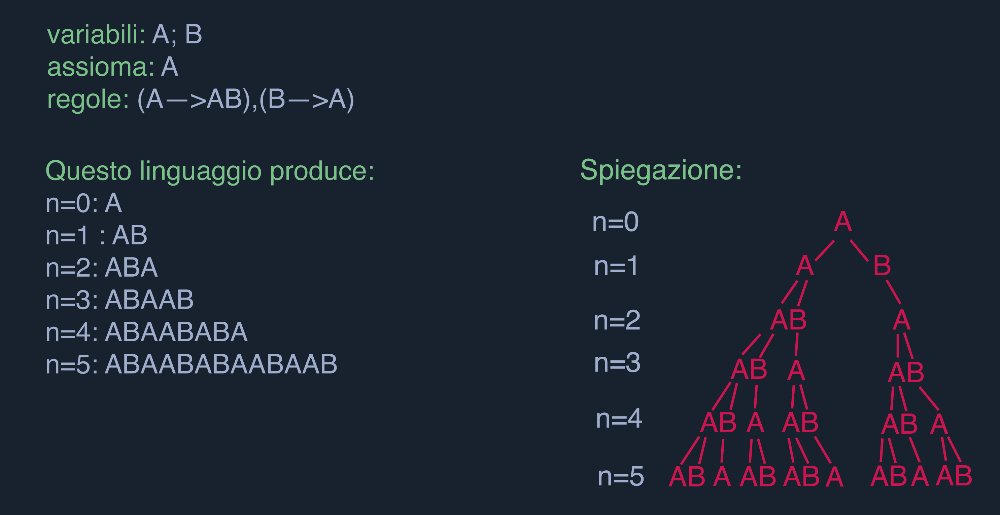
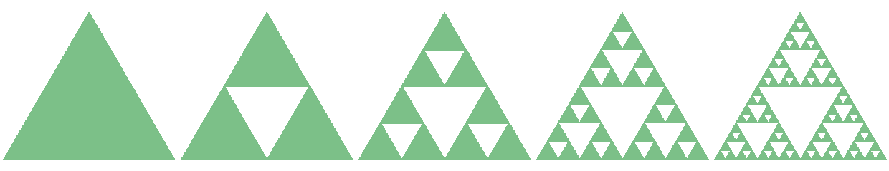
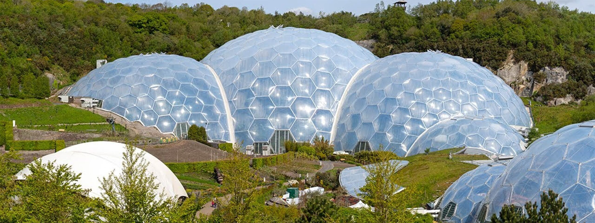
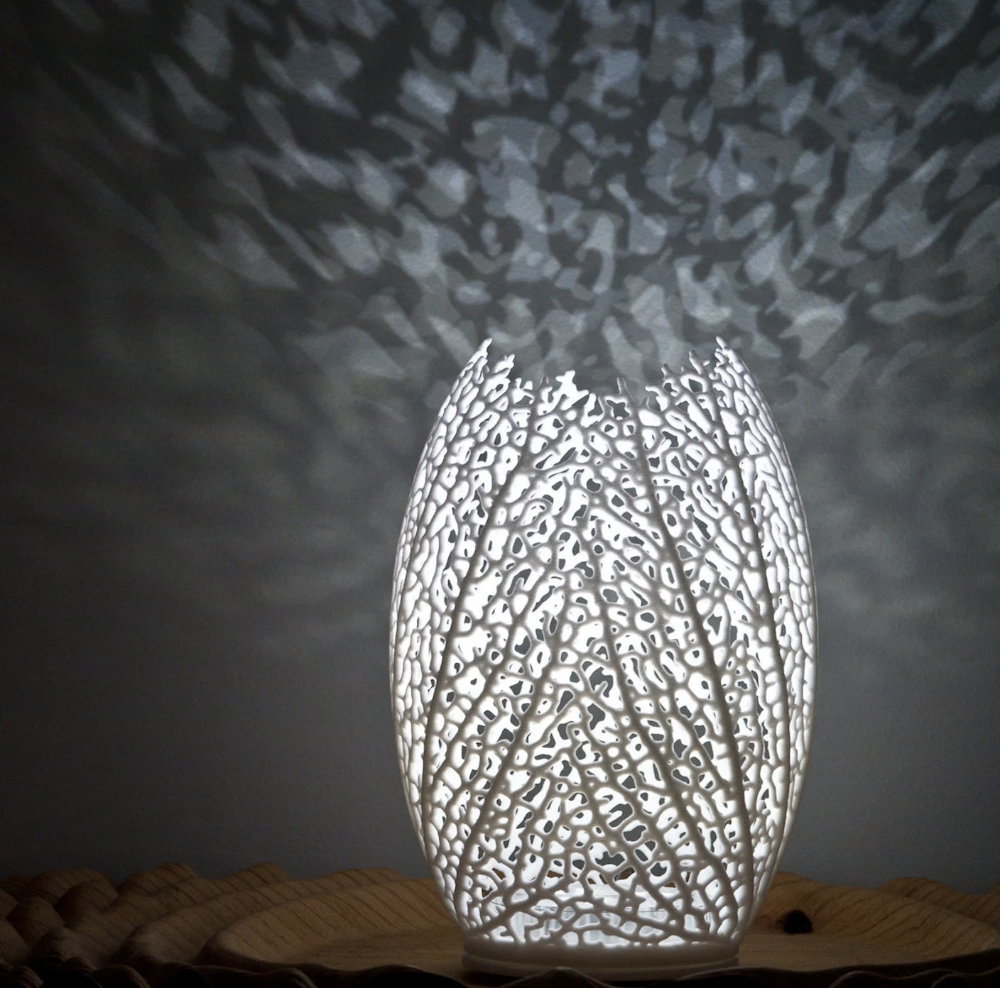

L-Systems
L-Systems
Un sistema Lindenmayer, o L-system, è un sistema di riscrittura parallelo e un tipo di grammatica formale. Come biologo, Lindenmayer ha lavorato con lieviti e funghi filamentosi e ha studiato i modelli di crescita di vari tipi di batteri.
Originariamente gli L-Systems sono stati ideati per fornire una descrizione formale dello sviluppo di tali organismi
multicellulari semplici e per illustrare le relazioni di vicinato tra le cellule vegetali.
L’enfasi era sulle relazioni spaziali tra cellule o moduli di piante più grandi. Il lavoro originale era limitato a una forma di base.
Successivamente, sono state proposte diverse interpretazioni geometriche degli
L-System al fine di trasformarle in
uno strumento più versatile per la modellazione di intere topologie di impianto.
Utilizzando tecniche come la codifica della catena si è perfezionata una geometria per rappresentare le immagini e si è dimostrato che dei sistemi molto semplici possono generare curve frattali. Si sono individuati L-Systems che generano curve classiche di riempimento dello spazio.
Come funziona il linguaggio
Il linguaggio è molto semplice. È costituito da simboli (l’alfabeto) e da regole di produzione. Il primo stato della frase si chiama assioma. Le regole di produzione possono essere applicate ripetutamente su questo assioma per evolvere o far crescere il sistema.
Un esempio è quello della crescita di un alga: 

Rappresentazioni di frasi
Dopo che un sistema è stato definito, abbiamo una frase lunga con proprietà interessanti. Per visualizzare queste proprietà, è necessario ideare un metodo per rappresentarle: utilizziamo il sistema utilizzando la grafica della tartaruga . La grafica della tartaruga viene renderizzata posizionando una “tartaruga” su un piano cartesiano e passando le istruzioni a questa tartaruga. La tartaruga si muove secondo le istruzioni che riceve. La tartaruga disegna lasciando dietro di sé una traccia. In questo caso, ogni simbolo di una frase del sistema L viene inviato alla tartaruga.
Esempi di L-SystemsElenco di tutti i somboli supportati da L-Systems e dal grafico della tartaruga
+ ruota Y attorno ad angoli definiti
- ruota Y attorno ad angoli negativi definiti
& ruota Z attorno ad angoli definiti ^ ruota Z attorno ad angoli negativi definiti \ ruota X attorno ad angoli negativi definiti < ruota X attorno ad angoli negativi definiti / ruota X attorno ad angoli definiti > ruota X attorno ad angoli definiti | ruota Y attorno ai 180 gradi definiti ! incrementa lindice del segmento ' riduce l'indice del segmento [ inizia il ramo ] termina il ramoCurva di Koch
La curva di Koch è una delle prime curve frattali di cui si conosca una descrizione. Apparve per la prima volta su un documento del 1904 del matematico svedese Helge von Koch. La curva, infinitamente frastagliata, ha lunghezza infinita, ed è un esempio di curva continua e non derivabile.
Generazione della curva: La generazione della curva di Koch avviene grazie all’esecuzione ripetuta di un programma di istruzioni o procedura ricorsiva: è una procedura perché precisamente definita da un numero finito di passi, è ricorsiva perché viene ripetuta meccanicamente.
Partendo da un segmento di determinata lunghezza dividere il segmento in tre segmenti uguali; cancellare il segmento centrale, sostituendolo con due segmenti identici che costituiscono i due lati di un triangolo equilatero; tornare al punto 1 per ognuno degli attuali segmenti.
Partendo da un segmento, se ne ottengono quindi quattro (costituenti una linea spezzata) nel primo ciclo, 4x4=16 nel secondo ciclo e così via, generando un frattale. Ingrandendo un qualunque dettaglio del frattale si ottiene ancora lo stesso frattale: in questo consiste l'auto similarità e la struttura fine dei frattali a qualunque livello di scala.

Triangoli di Sierpinski

Il triangolo di Sierpiński è un frattale, così chiamato dal nome di Wacław Sierpiński che lo descrisse nel 1915. È un esempio base di insieme auto-similare, cioè matematicamente generato da un pattern che si ripete allo stesso modo su scale diverse. È una figura replicante di ordine tre potendosi scomporre in tre sue miniature.

Generazione attraverso limite di successioni
Partendo dal triangolo:
- Livello 0 Si parte da un triangolo equilatero di lato a.
- Livello 1 Si congiungono i punti medi di ciascun lato individuando quattro triangoli simili al primo (di lato a/2) di cui tre ugualmente orientati e uno capovolto.
- Livello 2 Si ripete l’operazione di scomposizione precedente su ciascuno dei tre triangoli non capovolti ottenendo 9 triangolini non capovolti di lato a/4.
- Livello 3 Si ripete la stessa operazione sui 9 triangoli ottenendone 27 di lato a/8.
- Livello 4 Si ripete la stessa operazione sui 27 triangoli ottenendone 81 di lato a/16.
- Livello n Si ottengono 3𝑛 triangoli di lato 2−𝑛𝑎 (ricordiamo che a è il lato del triangolo al livello 0).
Continuando all’infinito il limite è il triangolo di Sierpinski.

Vantaggi e sfide derivanti dall'utilizzo dei L-Systems
Gli L-Systems rappresentano un modo flessibile per creare forme in grado di produrre risultati inaspettati e sorprendenti. Tuttavia presentano anche alcune limitazioni, come la difficoltà di controllare il risultato, la complessità delle regole e dei parametri.
Esempi pratici
Gli L-Systems sono stai usati per creare opere d’arte e di design molto affascinanti, ad esempio l’Eden Project di Grimshaw Architects che ha utilizzato gli L-System per progettare la struttura esagonale degli ambienti.

Anche la lampada Hyphae di Nervous System ha utilizzato gli L-Systems per creare una rete ramificata di vene che diffondono la luce attraverso un materiale stampato in 3D.

Arte generativa
L’arte generativa è un metodo di progettazione che utilizza algoritmi e parametri per creare una gamma di possibili soluzioni. Gli L-Systems sono un tipo di design generativo in grado di creare forme complesse e organiche utilizzando semplici regole e ripetizioni, possono anche essere modificati cambiando i parametri ad esempio l’angolo, la lunghezza o la casualità, per produrre diverse variazioni della stessa forma. Gli L-Systems possono essere utilizzati per generare forme e modelli che imitano strutture naturali come alberi, foglie, fiori, conchiglie o frattali (figura geometrica che si ripete all'infinito uguale a sé stessa, su scala sempre più piccola).